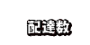
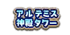
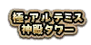

本頁面資訊僅供參考，實際情況請以遊戲內資料為準。
由於直接使用官方翻譯，可能會與其他站內翻譯相異，敬請見諒。
其他公告內容請參照日版當時公告翻譯。

- 活動限定效果
-
活動限定效果 デリバリーライダー A 
自身在『拯救！ 亞馬遜.com』中自身的「疲勞」狀態回復速度提升20%自身在通過『拯救！ 亞馬遜.com』關卡時獲得的絆增加100%(最大解放:200%，支援時無效)
只限瑪琇・基利艾拉特(Shielder)裝備時，我方全體＜含候補＞在通過『拯救！ 亞馬遜.com』關卡時獲得的絆增加20%(最大解放:40%，支援時無效)
| 從者 |
|---|
採用GoogleDrive資料夾呈現
僅列出關卡簡易資訊供參考之用
-

- 亞馬遜倉庫第1~25件
-
關卡 推薦Lv. 消耗 職階傾向 初次獎勵 1件目 危険な海賊が出没する宙域だ 41 1AP  5
52件目 犬好きのお客様だ 43 1AP  1m
1m3件目 道中にワイバーンが出るらしい 44 1AP 24件目 海辺への配達だ 46 1AP  3
35件目 銀河警備隊のお客様だ 55 1AP 26件目 採掘場へのお届けだ 48 1AP  3
37件目 配達先の視界が悪いようだ 51 1AP  3
38件目 お届け物の本が暴れている 53 1AP  10
109件目 牛売りのお客様だ 55 1AP 1011件目 道中にコソ泥がいるらしい 55 1AP 312件目 近くに盗賊団のアジトがあるらしい 57 1AP 513件目 新鮮なカニをお届けだ 59 1AP 2014件目 注文品は家庭用のロボットだ 61 1AP 515件目 軍の偉い方からのご注文だ 68 1AP 216件目 道中に鬼のような海賊が出るらしい 63 1AP 317件目 道中に危険な蜂がいるようだ 63 1AP 2m18件目 とてもセレブなお客様だ 63 1AP 519件目 未開の地への配達だ 65 1AP 221件目 骨のような海賊が出没するらしい 65 1AP 1022件目 配達先はアルトン星だ 65 1AP 2m23件目 注文品は難しそうな本だ 65 1AP 324件目 道中でスモッグ警報が出ている 65 1AP 1025件目 歌姫のマネージャーからのご注文だ 71 1AP 2 - 亞馬遜倉庫第26~50件
-
關卡 推薦Lv. 消耗 職階傾向 初次獎勵 26件目 注文品が重そうだ 66 1AP 327件目 配達先から牛の鳴き声が聞こえる 66 1AP 228件目 配達ドローンで楽が出来そうだ 66 1AP 529件目 凶暴な生物が出没するらしい 68 1AP 331件目 ノブノブ星へのお届けだ 67 1AP 332件目 ヒーローにもお届けだ 67 1AP 233件目 道中に珍しい魔物がいるらしい 67 1AP 534件目 動物園へのお届けだ 67 1AP 235件目 配達先は好戦的な傭兵団だ 73 1AP 336件目 極寒惑星からのご注文だ 68 1AP 337件目 重そうな鎧を着たお客様だ 68 1AP 2038件目 アルトン星からの再注文だ 68 1AP 1m39件目 巨大兵器の演習場へのお届けだ 70 1AP 1041件目 農業コロニーへのお届けだ 69 1AP 342件目 仮装衣装のお届けだ 69 1AP 243件目 ノブノブ星からの再注文だ 69 1AP 544件目 狩猟民族のお客様だ 69 1AP 245件目 某有名歌姫からのご注文だ 75 1AP 346件目 配達先はかなり寒そうだ 70 1AP 1047件目 美味しいロブスターのお届けだ 70 1AP 348件目 配達先に人気がない… 70 1AP 549件目 刑務所へのお届けだ 72 1AP 3

- 阿提米絲神殿塔 1~25階
-
關卡 推薦Lv. 消耗 職階傾向 初次獎勵 1階 兵隊のお客様のようだ 71 1AP 32階 無気力になっているお客様だ 71 1AP 23階 機械音がする宅配先だ 71 1AP 54階 ペットフードをお届けだ 71 1AP 205階 人の荷物に興味があるお客様だ 77 1AP 26階 クリスマスグッズをご注文だ 72 1AP 27階 騎士の格好をしたお客様だ 72 1AP 38階 鉱物を身にまとうお客様だ 72 1AP 109階 背の高いお客様だ 74 1AP 311階 儀式をしているお客様だ 73 1AP 1012階 ソリをご注文だ 73 1AP 313階 金色の可愛らしいお客様だ 73 1AP 514階 自然を好むお客様だ 73 1AP 215階 竜殺しのお客様だ 79 1AP 316階 呻き声が聞こえる宅配先だ 74 1AP 317階 寡黙なお客様だ 74 1AP 2m18階 人馬一体のお客様だ 74 1AP 1019階 門番が多い宅配先だ 76 1AP 321階 武器をご注文だ 75 1AP 1022階 魔性を身に宿すお客様だ 75 1AP 23階 ハロウィングッズをご注文だ 75 1AP 324階 日本酒をお届けだ 75 1AP 1025階 鋭い切れ味の剣をご注文だ 81 1AP 2 - 阿提米絲神殿塔 26~50階
-
關卡 推薦Lv. 消耗 職階傾向 初次獎勵 26階 銃がお好きなお客様だ 76 1AP 327階 厚い本のお届けだ 76 1AP 1028階 虫にお困りのようだ 76 1AP 329階 止まれないお客様だ 78 1AP 231階 甘いお菓子のご注文だ 77 1AP 332階 おっかな可愛いお客様だ 77 1AP 533階 ドール関連のご注文だ 77 1AP 234階 野性味あふれるお届け先だ 77 1AP 335階 自然を愛するお客様だ 83 1AP 336階 縁起の良いお客様だ 78 1AP 1037階 暖房器具のご注文だ 78 1AP 1m38階 監視が厳しいお届け先だ 78 1AP 339階 見た目より優しいお客様だ 80 1AP 3041階 健康器具のご注文だ 79 1AP 1m42階 撃つのが得意なお客様だ 79 1AP 243階 翼をお持ちのお客様だ 79 1AP 544階 和風な印象のお客様だ 80 1AP 345階 奇声が聞こえるお届け先だ 85 1AP 246階 キラキラな石のご注文だ 80 1AP 1047階 機械音が可愛いお客様だ 82 1AP 348階 三位一体のお客様だ 82 1AP 3049階 起業されたお得意先だ 82 1AP 3

- 極・阿提米絲神殿塔 1~25階
-
關卡 推薦Lv. 消耗 職階傾向 初次獎勵 1階 兵隊のお客様のようだ 80 1AP 102階 無気力になっているお客様だ 80 1AP 33階 機械音がする宅配先だ 80 1AP 34階 ペットフードをお届けだ 80 1AP 25階 謎の薬を注文したお客様だ 85 1AP 56階 クリスマスグッズをご注文だ 80 1AP 37階 騎士の格好をしたお客様だ 80 1AP 8階 鉱物を身にまとうお客様だ 80 1AP 109階 背の高いお客様だ 82 1AP 3m10階 手強いお客様だ 90 1AP  3
311階 儀式をしているお客様だ 81 1AP 3012階 ソリをご注文だ 81 1AP 313階 金色の可愛らしいお客様だ 81 1AP 314階 自然を好むお客様だ 81 1AP 215階 執筆中で忙しいお客様だ 86 1AP 216階 呻き声が聞こえる宅配先だ 81 1AP 3017階 寡黙なお客様だ 81 1AP 1018階 人馬一体のお客様だ 81 1AP 319階 門番が多い宅配先だ 83 1AP 3m20階 手強いお客様だ 90 1AP  3
321階 武器をご注文だ 82 1AP 322階 魔性を身に宿すお客様だ 82 1AP 3m23階 ハロウィングッズをご注文だ 82 1AP 1024階 日本酒をお届けだ 82 1AP 325階 ローマのお客様だ 87 1AP 5 - 極・阿提米絲神殿塔 26~50階
-
關卡 推薦Lv. 消耗 職階傾向 初次獎勵 26階 銃がお好きなお客様だ 82 1AP 227階 厚い本のお届けだ 82 1AP 328階 虫にお困りのようだ 82 1AP 229階 止まれないお客様だ 84 1AP 5030階 手強いお客様だ 90 1AP  3
331階 甘いお菓子のご注文だ 83 1AP 232階 おっかな可愛いお客様だ 83 1AP 233階 ドール関連のご注文だ 83 1AP 3034階 野性味あふれるお届け先だ 83 1AP 1035階 清らかな笑顔のお客様だ 88 1AP 336階 縁起の良いお客様だ 83 1AP 3m37階 暖房器具のご注文だ 83 1AP 238階 監視が厳しいお届け先だ 83 1AP 3039階 見た目より優しいお客様だ 85 1AP 540階 手強いお客様だ 90 1AP  3
341階 健康器具のご注文だ 84 1AP 242階 撃つのが得意なお客様だ 84 1AP 243階 翼をお持ちのお客様だ 84 1AP 1044階 和風な印象のお客様だ 84 1AP 345階 弾丸不足のお客様だ 90 1AP 546階 キラキラな石のご注文だ 85 1AP 47階 機械音が可愛いお客様だ 87 1AP 5m48階 三位一体のお客様だ 87 1AP 249階 起業されたお得意先だ 87 1AP 10050階 手強いお客様だ 90 1AP 5 - 極・阿提米絲神殿塔 51~75階
-
關卡 推薦Lv. 消耗 職階傾向 初次獎勵 51階 警備が強そうな配達先だ 85 1AP 3m52階 かなり空腹のお客様のようだ 85 1AP 353階 とても大きなお客様だ 85 1AP 5054階 活きのいいチキンのお届けだ 85 1AP 355階 戦術が好きなお客様のようだ 90 1AP 356階 とてもロックなお客様だ 85 1AP 357階 その翼で受け取りに来て欲しい… 85 1AP 3m58階 活きのいいおつまみをご注文だ 85 1AP 359階 珍しい古本をご注文だ 87 1AP 5060階 手強いお客様だ 90 1AP 561階 きらきらと光るお客様だ 86 1AP 362階 とてもお洒落なお客様だ 86 1AP 3m63階 メタルでカッコいいお客様だ 86 1AP 5064階 配達先の番犬が怖そうだ 86 1AP 365階 実験で使う薬をご注文だ 90 1AP 366階 仮装用の衣装をご注文だ 86 1AP 367階 クリスマス用品のお届けだ 86 1AP 368階 注文品は車用燃料のようだ 86 1AP 369階 メカ好きのお客様のようだ 88 1AP 5070階 手強いお客様だ 90 1AP  5
571階 財宝が好きそうなお客様だ 87 1AP 272階 品質の良いかぼちゃをお届けだ 87 1AP 373階 変わったヒポぐるみのご注文だ 87 1AP 3074階 危険そうな魔導書をご注文だ 87 1AP 375階 タワーの警備員からのご注文だ 90 1AP 3 - 極・阿提米絲神殿塔 76~100階
-
關卡 推薦Lv. 消耗 職階傾向 初次獎勵 76階 勇士を求めているお客様だ 87 1AP 377階 とても固そうなお客様だ 87 1AP 5078階 注文があったが人の気配がない… 87 1AP 3m79階 昔話に出てきそうなお客様だ 89 1AP 580階 手強いお客様だ 90 1AP 581階 ゲーム好きなお客様だ 88 1AP 382階 CEOの部下にお届け物だ 88 1AP 5083階 着ぐるみをご注文だ 88 1AP 3m84階 冷気が漂う宅配先だ 88 1AP 385階 血のように赤いワインをご注文だ 90 1AP 586階 本好きのお客様に違いない 88 1AP 3m87階 イタズラ好きなお客様だ 88 1AP 388階 お腹を空かせたお客様だ 88 1AP 389階 ペットが多いお宅へ配達だ 90 1AP 10090階 手強いお客様だ 90 1AP 591階 立派な角を持つお客様だ 89 1AP 292階 大量の肉をご注文だ 89 1AP 393階 高価なパーツをご注文だ 89 1AP 3094階 和道具をご注文だ 89 1AP 395階 梁山泊の看板がある宅配先だ 90 1AP 396階 大量の段ボールがある宅配先だ 90 1AP 297階 精巧な人形をご注文だ 90 1AP 5m98階 白馬をご注文だ 90 1AP 10099階 銅像の材料をご注文だ 90 1AP 3100階 手強いお客様だ 90 1AP 5